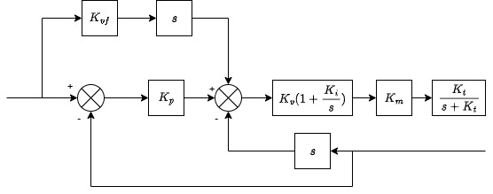
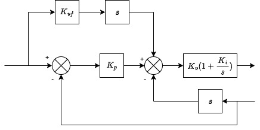
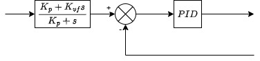
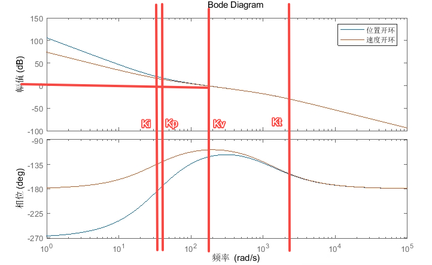
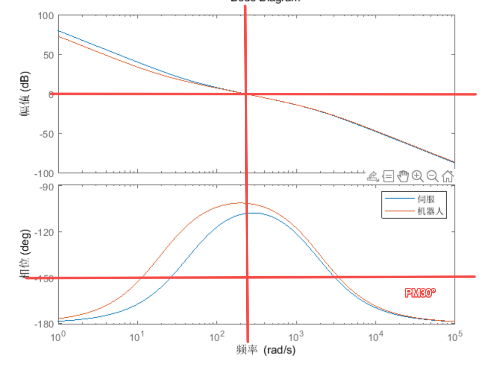
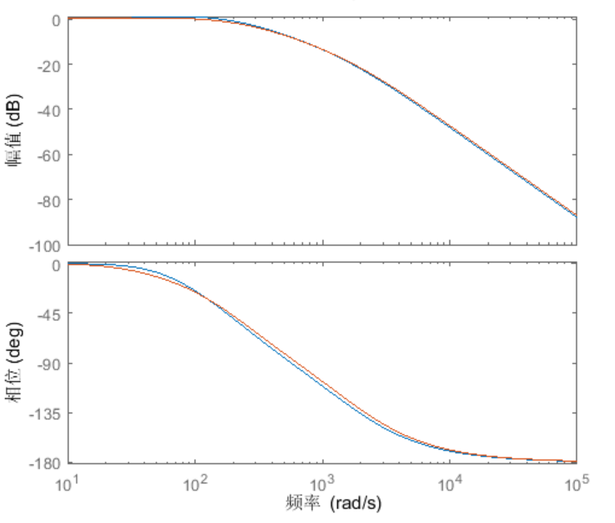
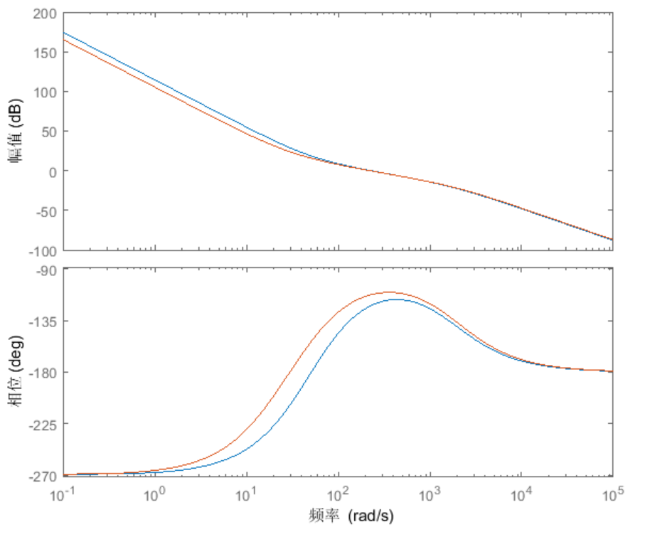
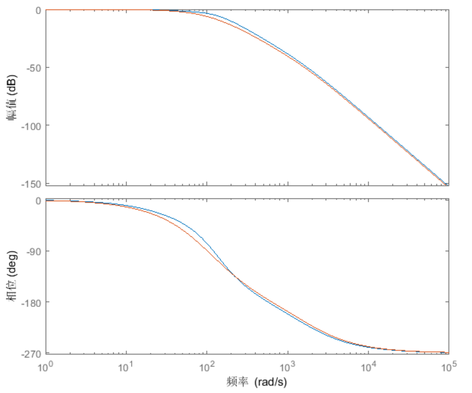

通用伺服PPI参数含义
概述

如上图，伺服位置环，速度环PPI参数：
| 含义 | 备注 | |
|---|---|---|
| $K_v$ | 速度环增益 | 系统响应带宽 |
| $J$ | 负载惯量 | 设置成实际的惯量能保证系统带宽稳定 |
| $K_i$ | 速度环积分 | 保持稳态无静差 |
| $K_t$ | 转矩指令低通滤波 | 抑制高频噪声 |
| $K_p$ | 位置环增益 | 系统响应带宽 |
| $K_{vf}$ | 速度前馈系数 | 前馈不影响系统稳定性 |
对于带前馈的PPI控制器。

可以转化为：

对于位置环，控制器为PID，其中：
| PID参数 | 对应PPI参数 |
|---|---|
| $P$ | $K_v(K_p+K_i)$ |
| $I$ | $K_vK_pK_i$ |
| $D$ | $K_v$ |
速度前馈系数可以将位置闭环零点 $K_p$转换为 $\frac{K_p}{K_{vf}}$，可以调节系统动态响应。
转矩指令滤波时间$K_t$相比于电气时间常数很大，可以看做将电机变成一个低通滤波。
被控对象可以看做是名义负载 $\frac{1}{(J+J_1)s^2}$与一个加扰动或乘扰动复合，只考虑名义负载：

根据Routh判据，稳定条件：
该简单模型的位置环稳定就能保证速度环稳定，但其他复杂情况有待验证。
伺服与机器人PPI参数区别
| 伺服 | 机器人 | 备注 | |
|---|---|---|---|
| $K_v$ | 基准，与刚性等级对应 | 一般PPI参数都建立与的关系 | |
| $J$ | 控制对象一般惯量不变，设置为辨识值，比较准确 | 控制对象惯量随姿态变化，惯量设置为最大惯量的2/3，不准确 | 惯量不准确会导致控制系统带宽不保持稳定 |
| $K_i$ | 机器人应该是考虑到惯量的不稳定，因此选用更小的来保证更大范围的稳定 | ||
| $K_t$ | 固定值0.5ms(318Hz) | 机器人不关心这个，但实际影响不小，应该尽量地小，抑制噪声 | |
| $K_p$ | 基准，设置为一阶模态() | 机器人用模态对应位置带宽（认为约等于位置闭环带宽） | |
| $K_{vf}$ | 普通情况0，视情况调节 | 普通情况0，高精度为1 | 不影响系统稳定性，提高响应，但不能抗扰 |
Bode图比较
速度开环：

开环0dB最好配置在相位裕度最好的频率。
机器人$K_i$比较小，相位更好，对惯量变化的鲁棒性更好，上图中30°相位裕度的频率更宽，能够应对更大范围的惯量变化，尤其是偏小的惯量。
速度闭环：

将-3dB带宽频率配置成相位-45°，这样速度闭环可以近似为一阶低通滤波器。
位置开环：

与$K_i$类似，较小的$K_p$可以更好的适应惯量的变化，但极限性能受到影响。
位置闭环：

将-3dB带宽频率配置成相位-90°，这样速度闭环可以近似为阻尼比0.707的二阶低通滤波器。
标准刚性等级表
| 刚性等级 | $K_v$ | $K_p$ | $K_i$ | $K_t$ |
|---|---|---|---|---|
| 刚性0 | 24 | 15 | 50000 | 1326 |
| 刚性1 | 32 | 20 | 39789 | 995 |
| 刚性2 | 40 | 25 | 31831 | 796 |
| 刚性3 | 48 | 30 | 26526 | 663 |
| 刚性4 | 56 | 35 | 22736 | 568 |
| 刚性5 | 72 | 45 | 17684 | 442 |
| 刚性6 | 96 | 60 | 13263 | 332 |
| 刚性7 | 120 | 75 | 10610 | 265 |
| 刚性8 | 144 | 90 | 8842 | 221 |
| 刚性9 | 176 | 110 | 7234 | 181 |
| 刚性10 | 1288 | 180 | 4421 | 111 |
| 刚性11 | 400 | 250 | 3183 | 79 |
| 刚性12 | 480 | 300 | 2653 | 66 |
| 刚性14 | 560 | 350 | 2274 | 57 |
| 刚性15 | 640 | 400 | 1989 | 50 |
| 刚性16 | 800 | 500 | 1592 | 40 |
| 刚性17 | 960 | 600 | 1326 | 33 |
| 刚性18 | 1200 | 750 | 1061 | 27 |
| 刚性19 | 1440 | 900 | 884 | 22 |
| 刚性20 | 1840 | 1150 | 692 | 17 |
| 刚性21 | 2240 | 1400 | 568 | 14 |
| 刚性22 | 2720 | 1700 | 468 | 12 |
| 刚性23 | 3360 | 2100 | 379 | 9 |
| 刚性24 | 4000 | 2500 | 318 | 8 |
| 刚性25 | 4480 | 2800 | 284 | 7 |
| 刚性26 | 4960 | 3100 | 257 | 6 |
| 刚性27 | 5440 | 3400 | 234 | 6 |
| 刚性28 | 5920 | 3700 | 215 | 5 |
| 刚性29 | 6400 | 4000 | 199 | 5 |
| 刚性30 | 7200 | 4500 | 177 | 5 |
| 刚性31 | 8000 | 5000 | 160 | 5 |
| 刚性32 | 8800 | 5500 | 145 | 3 |
| 刚性33 | 9600 | 6000 | 133 | 3 |
| 刚性34 | 10400 | 6500 | 123 | 3 |
| 刚性35 | 11200 | 7000 | 114 | 0 |
| 刚性36 | 12000 | 7500 | 106 | 0 |
| 刚性37 | 12800 | 8000 | 100 | 0 |
| 刚性38 | 13600 | 8500 | 94 | 0 |
| 刚性39 | 14400 | 9000 | 88 | 0 |
| 刚性40 | 15200 | 9500 | 84 | 0 |
| 刚性41 | 16000 | 10000 | 80 | 0 |
| 刚性42 | 16000 | 10000 | 80 | 0 |